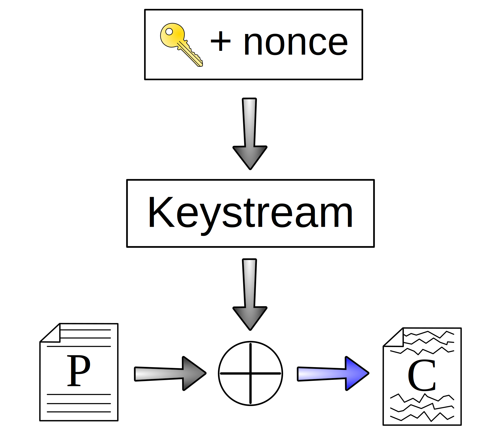
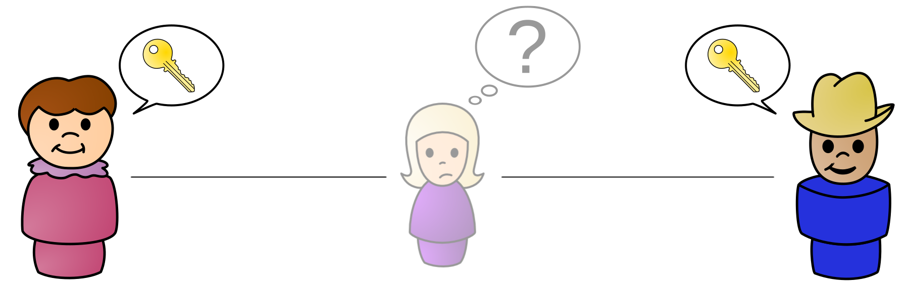
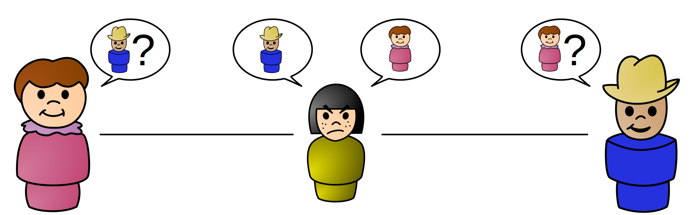
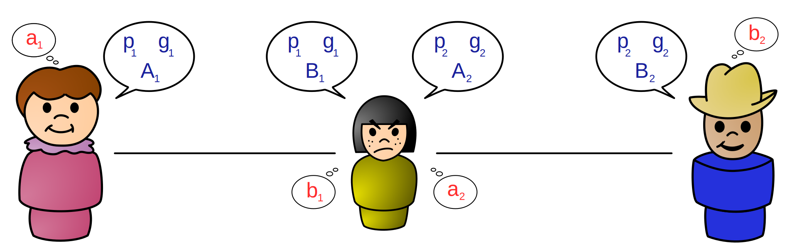
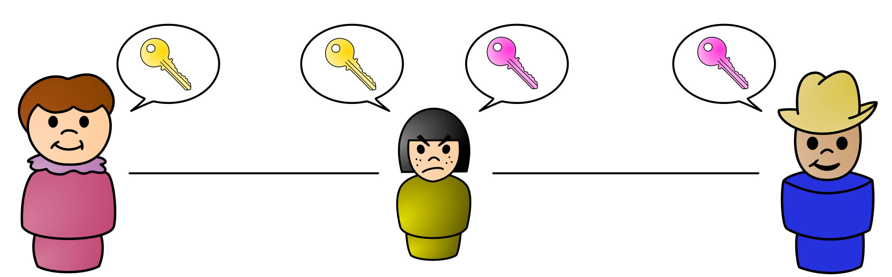
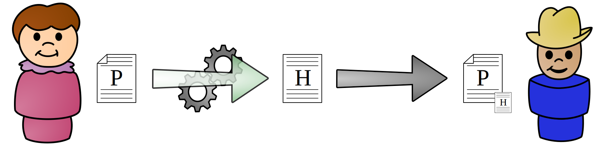
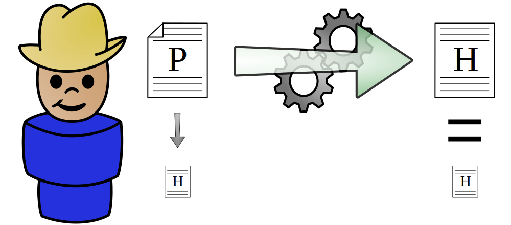
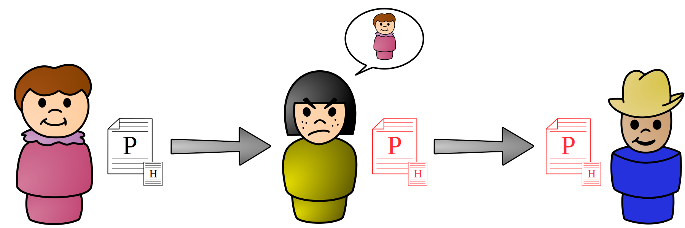

Intro to Cryptography
April King
- Describe the history and purpose of cryptography
- Build a solid understanding of cryptographic primitives
- Learn how cryptographic primitives are combined to make a complete cryptographic system
- Recognize the shortcomings and pitfalls inherent in building and implementing cryptographic systems
Learning Objectives
Cryptographic Terminology
Eye-glazing definitions belooooooow!
↓
- Cryptography
- Practice and study of security communications in the presence of third parties
- Plaintext (cleartext)
- Data or text that has not been encrypted
- Ciphertext
- The result of encryption performed on plaintext
- Algorithm
- A self-contained series of instructions that perform a function
- Cipher
- An algorithm that performs encryption and decryption
- Encryption
- Using a cipher to transform plaintext into ciphertext
- Decryption
- Using a cipher to transform ciphertext into plaintext
- Key
- A piece of information known only to one or both parties that is fed into a cipher and determines its output
- Key exchange
- The process by which two parties agree on upon a mutual key or key pair
- Key space
- The set of all possible keys
- Brute-force attack
- Attempting decryption with all possible key combinations until the correct key is found
- Cipher suite
- Combination of key exchange, authentication, encryption, and message authentication code (MAC)
- Cryptographic system (cryptosystem)
- A combination of cryptographic algorithms that implement a security service, usually encompassing key generation, encryption, and decryption
- Message authentication code (MAC)
- A small piece of information used to authenticate a message and to provide protection against tampering
- Cryptanalysis
- The study of breaking, weakening, or bypassing cryptosystems
- Steganography
- Concealing a message (image, file, text, etc.) within another message
- Placeholder names
- Names such as Alice, Bob, Eve (the eavesdropper), or Mallory (the malicious attacker) used as shorthand when describing cryptosystems
Cryptography History
Let's take a ride in the way back machine!
Beautiful Origin Story
...that dates back to approximately 1500 BCE
- Original goal of cryptography:
- Keeping messages confidential, for the purposes of commercial trade secrets and military communications
Historic Cryptography
- Substitution cipher
- Characters in plaintext are replaced with other characters
- Transposition ciphers
- Characters in plaintext are rearranged with other characters
This comprised the entirety of cryptography up until modern cryptography begins with World War II and the creation of the Enigma machine
Caeser Cipher
- Shift each letter in message three characters to the left
| A | B | C | D | E | F | G | H | I | J | K | L | M | N | O | P | Q | R | S | T | U | V | W | X | Y | Z |
| X | Y | Z | A | B | C | D | E | F | G | H | I | J | K | L | M | N | O | P | Q | R | S | T | U | V | W |
Example:
Conceptualize
- Algorithm
- Replace each letter with the letter three characters to the left
- Cipher
- Caesar (rotational) cipher, a substitution cipher
- Key
- Key is a -3 (or 23) letter rotation (ROT-23)
- Key space
- 26, since you have 26 possible rotation possibilities
That said, 26 doesn't make for the best possible key
Substitution Cipher
- Instead of shifting, match each letter to another letter randomly
| A | B | C | D | E | F | G | H | I | J | K | L | M | N | O | P | Q | R | S | T | U | V | W | X | Y | Z |
| G | J | Z | X | C | K | W | U | F | E | S | Q | D | A | P | R | I | L | O | M | Y | T | V | H | B | N |
Example:
Transposition Cipher
- Also known a permutation
- Encryption involves rearranging the plaintext to produce ciphertext
- Decryption simply involves reversing the rearrangement
Let's take a look at a simple example...
Route Cipher
- Key
- Grid is five characters wide, write text from upper left rightward. Route from lower right and spiral upward.
Canonicalize:
MOZIL LAISM YDINO SAUR
Example:
Modern ciphers still utilitize both substitution and transposition at the bit and byte level...
...so why might these simple ciphers not be secure?
Frequency Analysis

It turns out that not every letter appears equally as often
Frequency Analysis

Ideally, each letter should appear equally as often
Don't panic! The 1550s have us covered!
Vigenère Cipher
- A type of cipher known as a polyalphabetic cipher
- First described in the mid 1500s, it was considered the "indescipherable cipher" for over 300 years
- Defeats frequency analysis and eventually lead to the development of the one-time pad
Vigenère Cipher

Vigenère Cipher

Vigenère Cipher

Vigenère Cipher

Vigenère Cipher

Two consecutive "L"s encrypt to different outputs
Vigenère Cipher
- Turns out, the Vigenère cipher is completely busted
- Sometimes patterns in the plaintext appear in the ciphertext
Breaking Vigenère
- Iterate through each possible key length
- Divide the ciphertext into chunks of that length (6)
- Each column is a simple rotation cipher
- To reverse a rotation of 22 (W), move the ciphertext either -22 or +4. Repeat this process for every column, and we're back to the original message. H=-8 (+18) • I=-9 (+17) • M=-13 (+13) • S=-19 (+7) • Y=-24 (+2)
Let's take this one step further...
What if the key was exactly as long as the message?
(and also totally random)
One-time Pad
Congratulations! You've just invented the only truly unbreakable form of cryptography.
- If the key is as least as long as the message and truly random, you can combine (XOR) the key and the message to create a message that can never be decrypted
XOR (exclusive or)
XOR, sometimes written ⊕, is an operator that outputs true (1) if the elements differ and outputs false (0) if they are the same.
- 0 ⊕ 0 == 0, as they're the same
- 0 ⊕ 1 == 1, as they're the different
- 1 ⊕ 0 == 1, as they're the different
- 1 ⊕ 1 == 0, as they're the same
XOR (exclusive or)
| Message: | 1 | 1 | 1 | 1 | 1 | 1 | 1 | 1 | 1 | 1 | 1 | 1 |
| Key: | 0 | 1 | 0 | 0 | 1 | 0 | 0 | 1 | 1 | 1 | 0 | 1 |
| Output: | 1 | 0 | 1 | 1 | 0 | 1 | 1 | 0 | 0 | 0 | 1 | 0 |
XOR has the special property that its output is as random as the most random input
- Take non-random message
- Combine with random key
- Note: the output is as random as the key
If your key is a one-time pad, then your message can never be broken!
One-time Pad
So why don't we use one-time pads for all of our encryption, if it's so unbreakable?
- First, the key needs to be at least as long as your message. If your message is 5GB, then your key also needs to be 5GB.
- Also, the key can only be used once. Key reuse reveals information about all your previous messages.
The impracticality of having extremely long keys combined with the key reuse requirements makes the OTP infeasible for much real-world use.
Modern Cryptography
Modern Cryptography
Modern cryptography attempts to solve a number of historic cryptography problems:
- Key exchange: How can you get your key safely to the person you want to communicate with?
- Key distribution: How can you keep a key safe when you have a large number of parties?
- Key size: How can you maintain confidentiality, even with shorter key sizes?
Modern Cryptography
In addition to solving the key management issue, modern cryptography provides four security guarantees:
- Confidentiality
- Can I keep my data from decrypted and read?
- Integrity
- Has my data been tampered with?
- Authenticity
- Am I communicating with the party they claim to be?
- Non-repudition
- Can somebody deny that they sent a message?
Symmetric-key cryptography
Symmetric-key cryptography, like historic cryptography, uses the same key for both encryption and decryption:

Here, plaintext is being encrypted by a key into ciphertext, and then decrypted with that same key into the original plaintext.
Symmetric-key cryptography
- Advantages
- Computationally very fast and simple
- Keys are small (typically 128-256 bits)
- Disadvantages
- Key management is difficult, as each party requires a copy of the key
- Provides only confidentiality, with no assurances about authenticity or integrity
Due to its speed, symmetric-key cryptography is primarily used for bulk encryption, using other forms of cryptography to make up for its shortcomings.
Symmetric-key cryptography
Do these names ring a bell?
| Cipher | Key size | Type |
|---|---|---|
| AES | 128, 192, or 256 bits | Block |
| 3DES | 168 bits | Block |
| RC4 | 128 bits | Stream |
| Twofish | 128, 192, or 256 bits | Block |
Note that Mozilla recommends using only AES with 128-bit or 256-bit keys. When in doubt, contact your friendly neighborhood cryptographer!
Keys
Remember that in a proper cryptosystem, the key is the only thing that keeps your data confidential. As such, keys must be:
- Kept secure and be deleted as soon as they are no longer in use
- Unrelated to any past or future key
- Chosen at random from the entire key space
Key space
When we talk about keys, we often say "128-bit keys" or "256-bit keys". What does that mean?
- "128-bit" refers to the size of the key space. Key space is simply the number of possible keys.
- Since a bit can have two values (0 or 1), a 128-bit key space has 2128 possible keys.
How big is 2128?
If a single key was the size of a grain of sand, the key space would be roughly 30x the size of Jupiter!
Stream ciphers
- Operate on one bit at a time
- Key is combined with an initialization vector to produce a stream of bits as long as your message, known as a keystream
- Keystream is then XORed with the plaintext to produce the ciphertext
- Like a one-time pad, the keystream must never be reused; the IV must change with each use
Stream ciphers
A key and initialization vector are combined to generate a keystream, which is then XORed with the plaintext to generate the ciphertext
Block ciphers
- Operate on a fixed-size block of data (64 or 128 bits), unlike stream ciphers
- Are the most commonly used symmetric ciphers (AES, 3DES)
- Use a combination of XOR, permutations, additions, multiplications, shifts, etc.
- Require that data that isn't identical in length to the block size be padding, adding complexity
- Like with reusing keystreams, a given block of data will always encrypt to the same output
Block ciphers
Why is it a problem that the same input always encrypts to the same output?
- Leaks metadata about plaintext: many protocols and file formats have a identical headers
- An attacker can replay the ciphertext, allowing them to forge requests
- Any patterns in the plaintext will appear in the ciphertext
Block cipher modes of operation
- To solve this, all block ciphers have modes of operation for their use


- Here's what happens when you take an image and divide it into equal-sized blocks.
- Then, you encrypt each block separately using a symmetric key and AES.
- This block mode is known as the Electronic Codebook (ECB).
- Ideally, the encrypted message should look like random noise!
This isn't meant to scare you, but to show that even with good ciphers, you can still screw up cryptography!
Block cipher modes of operation
The various block cipher modes each provide their own benefits besides simply eliminating patterns in ciphertext
- Allowing the use of an initialization vector so that identical plaintexts encrypt differently
- Change block ciphers to function like stream ciphers, eliminating the need for padding
- Increased performance through use of parallelization
Block cipher modes of operation

This is the cipher block chaining (CBC) mode of operation
- ⊕ the first block of plaintext with an IV
- Use key and block cipher to encrypt block
- All future blocks ⊕ the plaintext with the previous block's ciphertext prior to encryption
This slide is for educational purposes and should not be construed as an endorsement of CBC mode.
Unfortunately, symmetric-key cryptography doesn't solve the most persistent of cryptography problems.
Key management
Symmetric-key cryptography becomes impossible to scale as the number of parties grows.
Key exchange
Meet Alice and Bob.
They want to have a conversation.
Key exchange

No problem, they physically meet up and exchange a key.
One key for two parties.
But what happens when we add more parties?
Key exchange

With just five parties, we're already up to 10 keys!
Key management
| Number of parties | Number of key pairs |
|---|---|
| 2 | 1 |
| 3 | 3 |
| 5 | 10 |
| 10 | 45 |
| 100 | 4950 |
| 1000 | 499,500 |
| US population | 52 quadrillion |
| World population | 2.54 x 1019 |
Symmetric-key cryptography
just doesn't scale.
So how do we fix this?
Public-key cryptography
Or asymmetric-key cryptography,
if you prefer to think of it that way.

In 1976, this guy struck upon a pair of brilliant ideas.
What if, instead of needing to meet ahead of time to exchange keys, two people could exchange keys remotely?
And an eavesdropper couldn't
figure out what their key was?
(Let's all give a hearty welcome to our eavesdropper, Eve!)
Welcome to Diffie-Hellman key exchange!

Diffie-Hellman key exchange allows two parties who have had no prior communications to jointly establish a key remotely, even when their method of communication is insecure.
| Known | Unknown | Known | Unknown | Known | Unknown |
|---|---|---|---|---|---|
| p = 23, g = 5 | p = 23, g = 5 | p = 23, g = 5 | |||
| a = 6 | b | b = 15 | a | a, b | |
| A = ga mod p | B = gb mod p | ||||
| A = 56 mod 23 = 8 | B = 515 mod 23 = 19 | ||||
| B = 19 | A = 8 | A = 8, B = 19 | |||
| s = Ba mod p | s = Ab mod p | ||||
| s = 196 mod 23 = 2 | s = 815 mod 23 = 2 | s = 19a mod 23 s = 8b mod 23 |
|||
| s = 2 | s = 2 | s | |||
Blue values are public, whereas red values are private (secret).
- Alice and Bob agree upon a public prime base (g) and a public prime modulus (p)
- Alice chooses a secret private key (a), and Bob chooses a secret private key (b)
- Alices calculates ga mod p, and Bob calculates gb mod p
- Alice sends Bob her public key (A), and Bob sends Alice her public key (B)
- Alice calculates Ba mod p, and Bob calculates Ab mod p to arrive at a shared key (s)
- Since Eve knows neither a nor b, she can't determine the shared key
Alas, Diffie-Hellman key exchange has a fatal flaw.
While it protects against eavesdroppers like Eve, it doesn't help against someone a bit more... malicious.
Say hello to Mallory, everyone!
Mallory just loves to sit in the
middle of conversations and meddle with them.
Who does things like that?

What if Mallory sat in the middle of a conversation between Alice and Bob, pretending to be the other person?

Alice would do her key exchange with Mallory, while Bob would do a different key exchange with Mallory.

In the end, Alice and Bob would both think that they had securely exchanged keys, but really they would both be talking to Mallory.
Alice and Bob are both having perfectly secret conversations with Mallory.
In cryptography, we would say that we have achieved confidentiality, but we don't yet have authenticity.
So what about his other idea?
What if, instead of two people sharing a key...

...each person had two keys?
A public key that they could give out to anyone.
And a private key that they kept to themselves.

And what if that public key could encrypt messages that only the private key could decrypt?
Well, it was great idea.
But he — nor anybody else — knew how to
make the mathematics work.
Luckily for all of us, a trio of folks by the name of Ron Rivest, Adi Shamir, and Leonard Adleman discovered a way to make it work.
You might know them by their initials: RSA
RSA cryptosystem
RSA is based on a one-way mathematical function known as a "trapdoor function". These functions are easy to do in one direction, but difficult to do in the other direction.
More specifically, RSA relies on the difficulty of factoring the multiple of two large prime numbers.
RSA: a simple example
- Choose two prime numbers (p = 89, q = 101); these are the private key.
- Multiple these numbers together (n = p × q = 8989); this value (along with a few extra bits) is the public key.
So easy, even a calculator can do it!
- Now think about how you would try to figure out the factors of n, if you didn't know p and q already.
Is it divisible by 2? Nope. How about 3? 5? 7? ...
- In reality, p and q are hundreds of digits long, making it infeasible for a computer to determine what the private key is, even knowing the value of n.
Let's take a look at how RSA encryption works in practice...

First, Alice asks Bob for a copy of his public key.

Once she has Bob's public key,
she then encrypts her message with it.
Next, Alice sends the ciphertext to Bob.

Finally, Bob decrypts the ciphertext with his private key.
Now with 100 people, we just need 100 public-private key pairs, instead of 4950 shared keys.
Plus, Bob can encrypt messages with his private key that anybody can decrypt to prove his identity.
We call this signing, but more on that later.
I think it's safe to pack it in.
Cryptography is a solved problem.
Not so fast!
Public-key cryptography
- Advantages
- Solves the key distribution problem
- Authenticates of the origin of messages
- Disadvantages
- Computationally very slow
- Hundreds of times of slower than symmetric-key crypto
- Requires very large keys
- RSA keys are typically 2048 bits
- AES are typically a mere 128-256 bits
- Computationally very slow
This is 16x larger to transmit, and 21920x larger for calculations

Also, how does Alice know that she's actually getting Bob's public key when she asks for it?
We'll get to that, but there's a few more
concepts we need to understand first!
Hash functions
They just don't make concepts like this anymore!
Hash functions
Cryptographic hash functions take any size input and convert it to a fixed size output called a hash or message digest
Hash functions
- Always result in the same size output (typically 128-512 bits), regardless of input size
- Sensitive to input changes: a single bit difference in the input should result in a completely different hash
- Make it difficult to find two different inputs that result in the same output (collision resistance)
- Aren't reversible: you can't go from the hash back to the original message
What might this look like?
Hash verification

First, Alice creates a hash of her message, and then sends the message and hash onto her ol' pal Bob.
P.S. This is terribly insecure, please don't do this!
Hash verification

Once Bob receives Alice's message, he runs it through the same hash function and then compares it to the hash he received from Alice.
Hash verification

But how does Bob know that the message and hash weren't replaced with an entirely different message and associated hash, from Mallory?